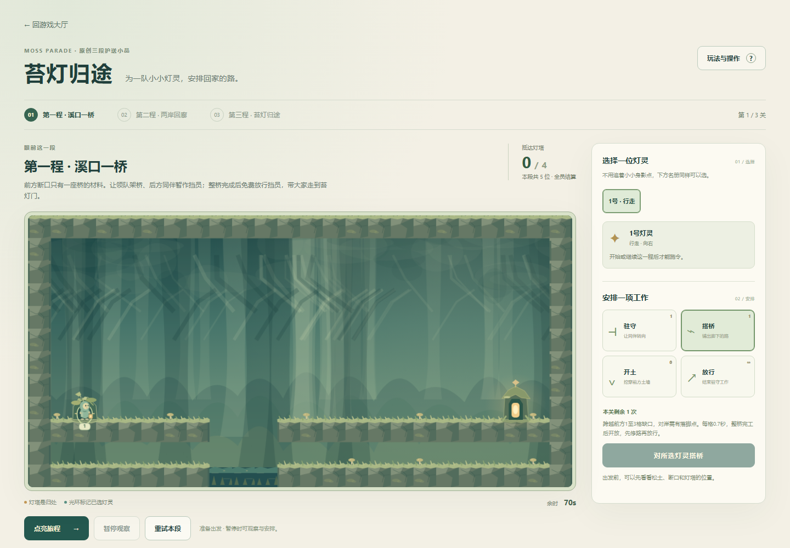
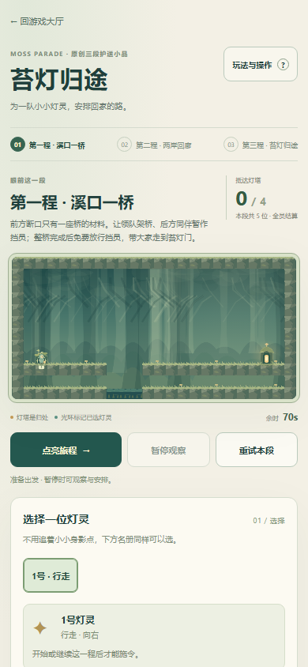
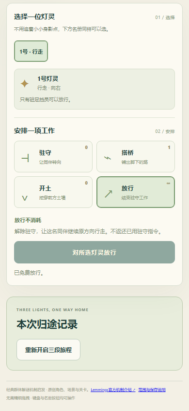
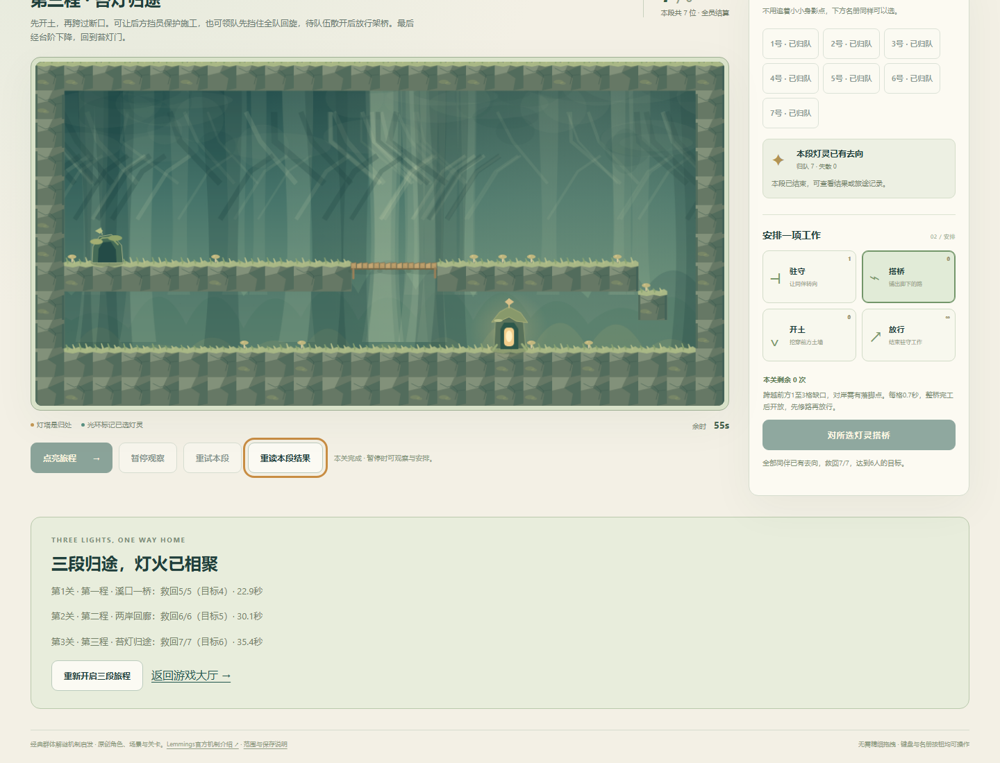
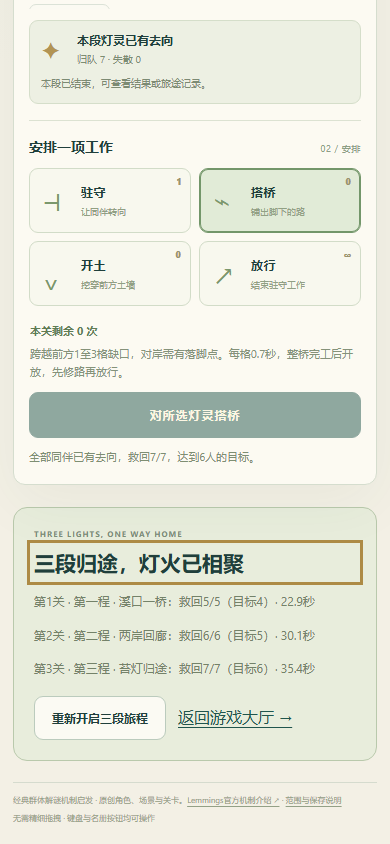
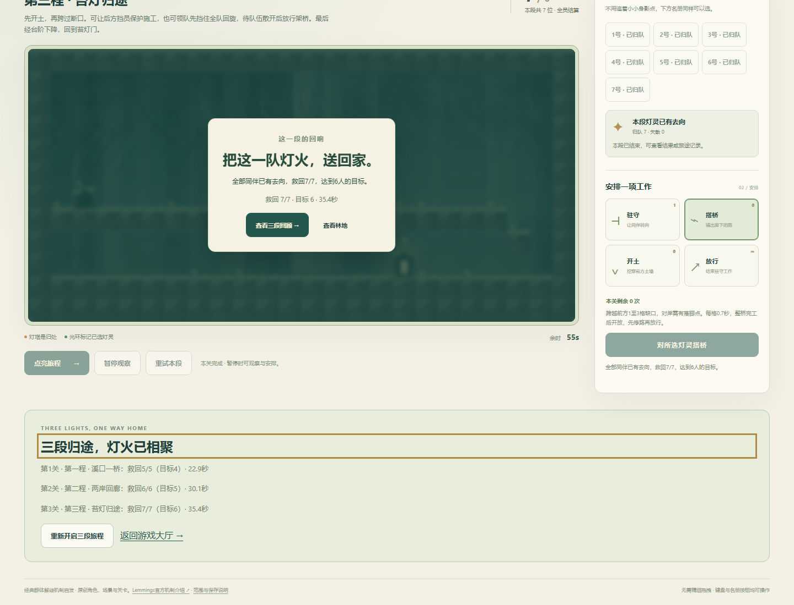
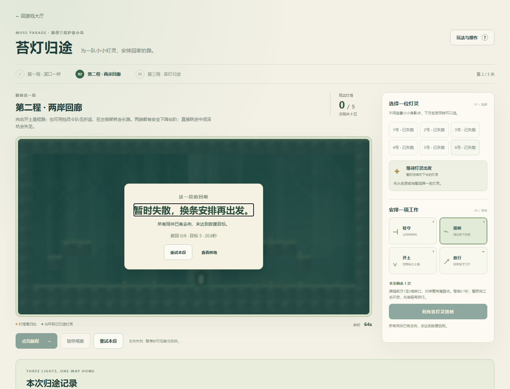

原创三关群体路径救援。自主行进、有限驻守/搭桥/横向开土与免费放行；施工每格0.7秒，完成后才开放。第二关土道短路或桥路绕行，第三关组合施工与两种驻守安排。原角色、地图、素材不复制；新作独立存档，不影响原42项。四个停止/冻结状态不变，当前43目录、39活动作品。
本轮明确指定Lemmings式机制参考，原72条图鉴未包含该参考，因此只新增原创作品及参考说明，图鉴仍72条。官方PlayStation机制介绍已核读，用于识别救援、挖掘、搭建和阻挡方向；非初代逐项手册，没有复制其图片或地图。暂停下令、免费放行及整段定长施工是本作原创简化。
Windows桌面Chromium147，1440×1100和390×844 CSS视口。只读策略约50ms观察一次，使用原生名册、工具、确认按钮和普通P暂停来安排；没有注入角色、地形、时间、救援数、终态或完成档。人物移动/施工均由生产引擎随普通页面计时。以下为活动秒，不是预估真人时长。
| 关段 | 活动时间 | 归队 / 目标 | 已用指令 |
|---|---|---|---|
| 溪口一桥 | 22.95秒 | 5/5 · 目标4 | 驻守、桥、放行 |
| 两岸回廊 | 30.15秒 | 6/6 · 目标5 | 开土短路 |
| 苔灯归途 | 35.35秒 | 7/7 · 目标6 | 开土、驻守、桥、放行 |
第二关另一次不下令，20.55秒自然全6失散；刷新保留失败，确认重试只重置本关，首关成果保留。活动刷新暂停且人物/地形/工具/时间一致；实际关间与真实最终结局原会话刷新通过。每次胜利先保留浏览器档，实际完成档仍在本地，不靠重建夹具冒充。查看林地后可重开结果；最终回顾焦点和总结返回大厅使用同一真实完成档短验。
模型6组：第二关开土30.15秒或架桥33.8秒，第三关后方挡员35.35秒或领队回旋44.85秒，五条路线均全员；额外0.15秒施令延迟仍通过。覆盖无效施令不扣资源、暂停下令与施工停时、免费放行不返还、施工快照精确恢复、自然失败、遗留挡员超时失败、坏档拒绝。早期模型第三关试验曾失足1人，原记录保留；后调整辅助策略的挡员时机，未改物理和难度。旅程/存储另7组覆盖进度、重复结算、自然失败重试、完整结果及写失败恢复。
390 CSS可信触控模拟8次pointerdown：名册选人、工具确认、触摸取消不误下令、驻守/放行且不退还指令、暂停停时。键盘选择、工具快捷键、原生Enter、确认默认取消、最终回顾焦点、大厅搜索返回另验。模拟不是实机触屏或手机性能验收。
明确QuotaExceededError夹具保留旧有效字节，准确提示刷新风险；写入恢复后警告消失。坏档与旧作哨兵夹具验证保全原字节，不覆盖旧作键。它们不是实际设备配额故障。首次首屏检查遇到未接完的restore导出，短验脚本也曾多点一次暂停误断言；均在发布前修正并保留原本地记录，未据此改难度或宣称产品回归。







普通UI完整记录 · 触控与隔离故障 · 真实完成档回顾 · 43项入口与返回 · 五条模型路线 · 早期模型尝试 · 6组模型检查 · 7组旅程检查 · 模型测试 · 旅程测试 · 只读辅助策略
本作无音频。普通UI只完成默认一条三关路线；两条备选路线仅模型验证。不声称完整原作职业集、成熟平衡、真人乐趣、无辅助手感、真机性能或审美已验收。没有全库大回归，也未重复在线完整通关。